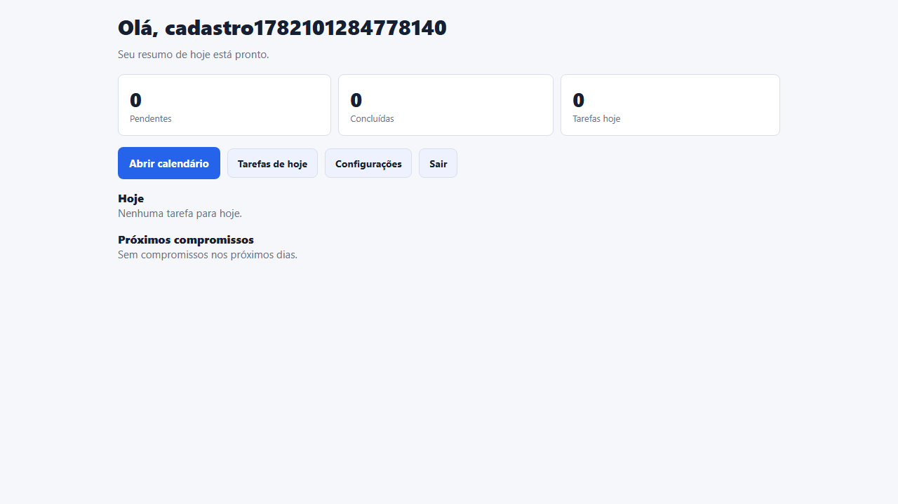
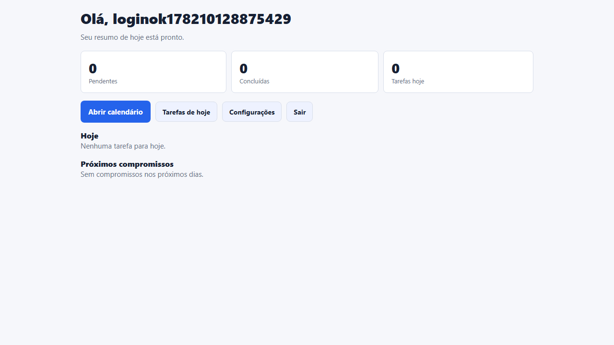
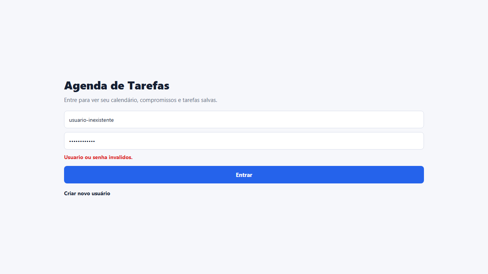
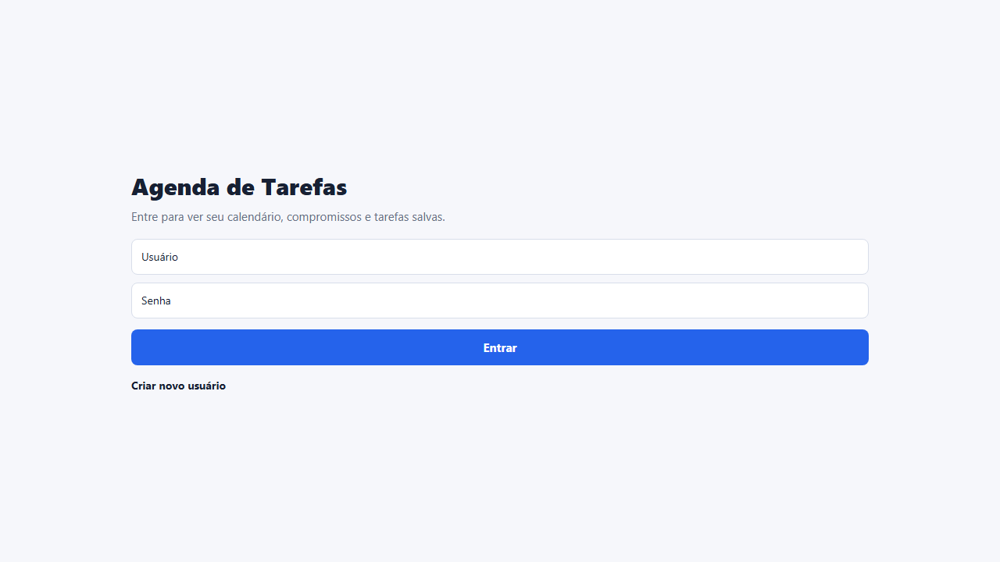
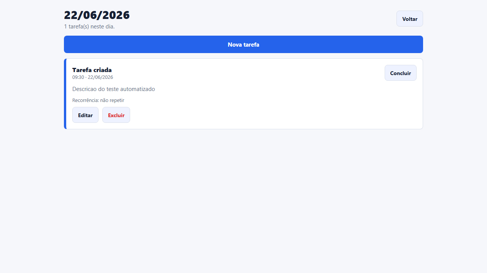
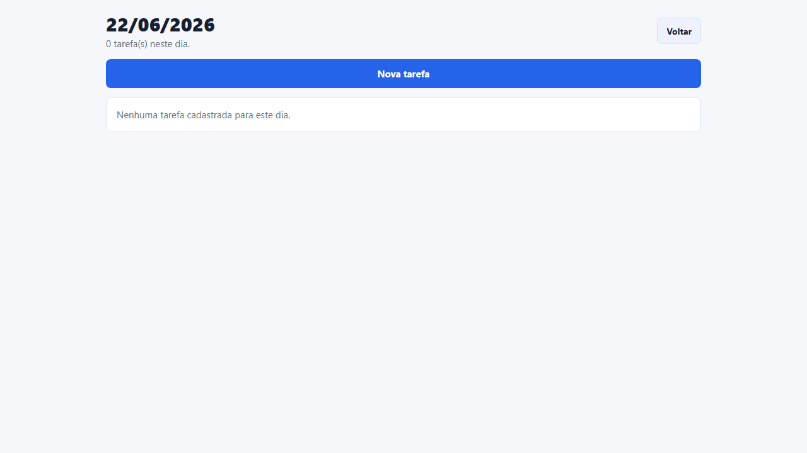
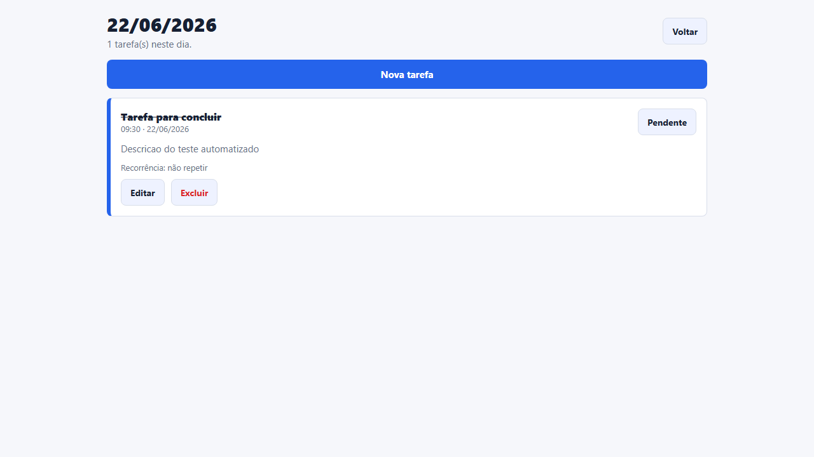
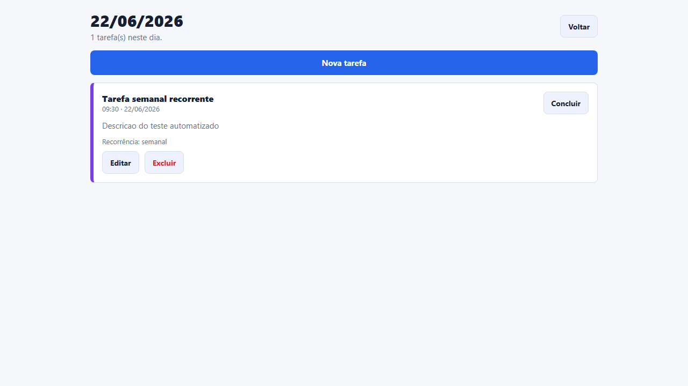
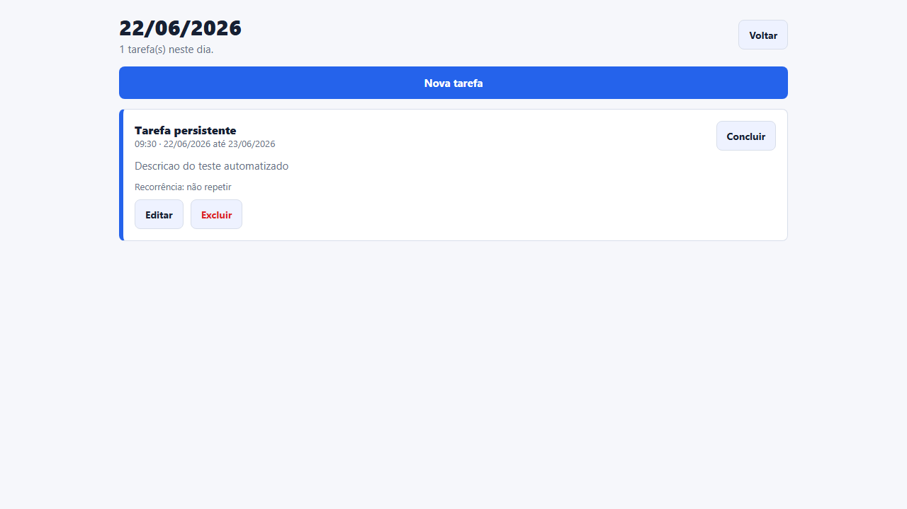

Ambiente
- Sistema: Windows
- Node.js: v24.14.0
- npm: 11.9.0
- Expo: ~54.0.33
- React Native: 0.81.5
- Playwright: 1.60.0
- Navegador: Chromium via Playwright
Resultado Geral
A suite validou cadastro, login, login invalido, logout, criacao, edicao, exclusao, conclusao, recorrencia e persistencia de dados.
A execucao final foi aprovada em todos os cenarios e gerou 10 imagens de evidencia na pasta evidencias.
Cenarios Automatizados
| # | Cenario | Resultado | Duracao | Evidencia |
|---|---|---|---|---|
| 1 | Cadastro de usuario | Aprovado | 3.984s | 01-cadastro-usuario.png |
| 2 | Login valido | Aprovado | 4.184s | 02-login-valido.png |
| 3 | Login invalido | Aprovado | 3.628s | 03-login-invalido.png |
| 4 | Logout | Aprovado | 4.277s | 04-logout.png |
| 5 | Criar tarefa | Aprovado | 4.288s | 05-criar-tarefa.png |
| 6 | Editar tarefa | Aprovado | 4.747s | 06-editar-tarefa.png |
| 7 | Excluir tarefa | Aprovado | 5.364s | 07-excluir-tarefa.png |
| 8 | Concluir tarefa | Aprovado | 6.153s | 08-concluir-tarefa.png |
| 9 | Criar tarefa recorrente | Aprovado | 4.805s | 09-tarefa-recorrente.png |
| 10 | Persistencia dos dados apos reiniciar | Aprovado | 6.170s | 10-persistencia-dados.png |
{kind=link}
{kind=link}
{kind=link}
{kind=link}
{kind=link}
{kind=link}
{kind=link}
{kind=link}
{kind=link}
{kind=link}
Avaliacao OWASP Top 10:2025
| Item | Status | Avaliacao |
|---|---|---|
| A01 Broken Access Control | Conforme | Tarefas filtradas por userId e sessao local com dados minimos. |
| A02 Security Misconfiguration | Conforme | Nao ha APIs externas, banco remoto ou segredos expostos em configuracao. |
| A03 Software Supply Chain Failures | Nao Conforme | npm audit encontrou 26 vulnerabilidades transitivas; correcao completa exige upgrade maior do stack. |
| A04 Cryptographic Failures | Conforme | Senhas novas usam hash SHA-256 com salt local. |
| A05 Injection | Conforme | Entradas sao tratadas pelo React Native e sanitizadas antes de salvar. |
| A06 Insecure Design | Conforme | Fluxo exige autenticacao, isola tarefas por usuario e valida dados principais. |
| A07 Authentication Failures | Conforme | Senha minima, erro generico e limite temporario de tentativas invalidas. |
| A08 Software or Data Integrity Failures | Conforme | Operacoes centralizadas em servicos e persistidas com AsyncStorage. |
| A09 Security Logging and Alerting Failures | Conforme | Eventos locais de auditoria para autenticacao e tarefas. |
| A10 Mishandling of Exceptional Conditions | Conforme | Fallback em leitura JSON, mensagens controladas e validacao antes de salvar. |
Melhorias Implementadas
- Hash de senha com salt.
- Limite de tentativas de login.
- Sanitizacao de entradas.
- Validacao de data e horario.
- Registro local de auditoria.
- Testes Playwright com screenshots reais.
Ponto de Atencao
O item A03 ficou como Nao Conforme porque as dependencias transitivas ainda possuem alertas no npm audit. A recomendacao e planejar upgrade controlado para versoes maiores do Expo e React Native.
Evidencias Visuais
01 - Cadastro de usuario

02 - Login valido

03 - Login invalido

04 - Logout

05 - Criar tarefa

06 - Editar tarefa
07 - Excluir tarefa

08 - Concluir tarefa

09 - Tarefa recorrente

10 - Persistencia

Conclusao
A aplicacao passou em todos os 10 testes automatizados e atingiu 9 de 10 itens conformes na avaliacao OWASP Top 10:2025. Para uma apresentacao academica, o resultado demonstra funcionamento completo, evidencias reais e uma analise honesta dos riscos pendentes.